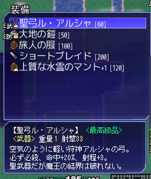

シルバーセカンド開発日誌
■
2014-12-06 (土) 片道勇者+ 59 仕上げ▼【片道勇者プラス（公開後） その59】
片道勇者プラスは正式リリースに向けての仕上げ……
をしたいなあと思いはするものの、まだバグはなくなりません。
ただ、それでも「原因が分からないもの」以外は、小さめのバグや、
もしくはバグか仕様か紛らわしい程度の現象が主になってきたので、
プレイする分にはもうほぼ感触は変わらない状態だと思います。
今は、翻訳のテキストを整理して送ったり、
これまで連絡できなかった関係各所に連絡を飛ばし終わったりして、
ようやく少しだけ一段落した状況です。
これからも引き続きバグ修正を行っていきますので、
何か怪しい現象を見つけた方はトップページのニュース欄から
バグ報告してくださると助かります。
【旧作セールのお知らせ】
12/17より、旧作シェアウェアのセールを行います！
対象は「シルエットノート」と「シルフェイド学院物語」の2本ですので、
これらをいますぐ定価で買いたいという方は覚悟の上でお願いいたします！
基本的に、旧作2本は片道勇者プラス（500円）と
一緒に買いやすいお値段にする予定です。
また、「シルフェイド学院物語」に関しては12/17より規約を変更し、
プレイ動画の「アップロード」も許可する予定です。
（これまでは規約上、生放送しかできませんでした）
なお、「片道勇者プラス」の公式サイト販売分は特にセールいたしませんので、
500円のまま価格は変化しません。いつ買っても同じですのでご安心ください。
ただPLAYISM販売分の片道勇者プラスは、セールの判断が
半分お任せ状態だったり、始まるまで皆さんに内緒だったりするので、
突然セールが始まることもあります、ご容赦ください。 ■
2014-11-29 (土) 片道勇者+ 58 翻訳前▼
今週も、これまでよりは少ない量ですが修正が入りました。
訳者さんにテキストを渡す締め切りまで残り数十時間に
なってしまったので必死にテキスト整理作業中です。
【今週の主な調整】
●旧10000km報酬は果てから+1000kmの冒険で入手可能に
●「人類には早すぎる」難易度と「マニアモード」の修正
●新特徴「強敵だらけ」「闇が速い」の実装
●相変わらず多くのバグの修正
翻訳用のテキストを提出した後に何か足したりいじったりすると、
色んな整合性が合わなくなって新たなバグやミスの元になりそうなので、
データ追加は基本的に今回で終了です。
ここからは数値の修正やバグ修正を中心に行っていきます。
いつもバグ報告や再現方法を送って下さる皆さま、
本当にありがとうございます。
【おすすめゲーム】
片道勇者プラスもう終わったんだけど、他に楽しめるローグライクないの？
という方もおられるかもしれません。せっかくなので、
私が個人的におすすめするゲームをご紹介します。
これもウェブマネーで買えます。
【FTL: Faster Than Light】
リンク先の映像をご覧になると「え？ローグライク？」と思われるかもしれませんが、
既存のローグライクの面倒な部分を簡略化し、判断要素だけを残したら
こんな感じになるだろうなという意味では新世代のローグライクだと感じます。
このゲームには非公式ながら日本語化MODがあるので、
英語が分からない私でもそれを導入することで遊びやすくなりました。
最近は漢字入りで日本語化できるMODがあるので読みやすいです。
さて、これがどんなゲームかというと、宇宙でSFな世界を舞台にした冒険で、
途中で現れる敵船を倒したりイベントをこなしたりしながらスクラップ（お金）を集め、
それで宇宙船を強化・武装の買い物をしながらマップの右方向に
進行し続け、最終的に待ち受けるボスを倒すゲームです。
左からはこちらの移動回数に応じて敵の軍団が押し寄せてくるので、
追いつかれないように右に移動し続けなければなりません。
どこかで見た光景なのでなじみやすいですね。
システム的にはシンプルにまとまっており、ショップで兵器を買ったり
クルーを雇ったり船の電力を増やしたりしてアップグレードする部分は、
英語が分からなくても何とかなるくらいです。
基本的にはスクラップ（お金）でどう強化するかの配分に迷いつつ、
ラスボス戦に向けてうまく生き残っていくゲームになります。
宇宙船同士の戦いでは、どの武器で敵のどこを狙うかの駆け引きが熱く、
最初に「火器管制」を壊して攻撃できなくするか、
「エンジン」を撃って回避率を下げるか、「シールド」を先に破壊するか……
と戦術を考える楽しさを味わえます。
それより、乗りこんできた敵クルーのいる場所を無酸素状態にして
窒息死させるほうが楽しいという人もいるかもしれませんね。
うっかりまちがえて宇宙船のドアを全解放してしまい、船内の酸素がなくなって
味方クルーをほぼ全滅させてしまったこともいい思い出です。
このゲームは倉庫などの引き継ぎ要素を持たないため、
基本的には毎回がガチ勝負のプレイになります。
片道勇者において、「次元倉庫なしの高難易度が好き」で
かつ「SFも好きな人」におすすめできる一作かもしれません。
あと、私はこのゲームのハードモードがいまだにクリアできません。
逆にイージーモードでも、片道勇者の最高難易度かハードくらいの難しさは
あるのではないでしょうか。やりごたえがある一作ですので、よければぜひ。
そして腕に自信がある方は私の代わりにハードモードをクリアしてください。■
2014-11-22 (土) 片道勇者+ 57 続々修正▼
リリースからほぼ一ヶ月近く経過したことが
まだ信じられないウルフです。
今週もやっぱり変わりなく、バグ修正と調整の日々です。
もう翻訳テキストの整理に入らないとヤバい状況なので、データ追加や
他の処理に影響しうるシステム変更は基本的にこの辺りで終了です。
今後は数値調整、翻訳関連の作業を中心に行っていきます。
が、バグは一日10個ずつくらい順調に出続けているので、
怪しい挙動を見つけた方は引き続きご報告いただけますと幸いです。
バグばかりは、年末まで直し続けている光景が目に浮かぶようです。
今週の主な修正は以下の通りです。
基本的に、遊びやすさ向上の修正が主です。
【今週の主な修正】
●詩人のスキルを調整、レベル30で魔物を仲間にできます
●アイテムに乗ったときの処理を変更。アイテムに乗って
何か使うと一気に2ターン過ぎる現象がなくなります。
●ランダムイベントに一定時間強くなるフィーバーイベント追加
●パンティの傭兵代金が自動支払い可能になりました
●最初のネムリに腐った実を押しつけて仲間にできるように修正
●ナユタの実が2段階に分けて腐るようになりました
●クリア時にも自動スクリーンショット撮影される機能を追加
●ゲーム終了時、協力NPCの持ち物を主人公に移動させる処理追加
●地形出現率のボーナスをもっとまともに計算するよう修正
●城の住人に、新たに「物知りな女性」を追加しました。
肉の焼き方が公式にレクチャーされます。■
2014-11-15 (土) 片道勇者+ 56 続修正▼【片道勇者プラス（公開後） その56】 修正中
今週も特に変わりなく、ずっとバグ修正と調整の日々です。
相変わらず疲れが抜けなくてゲッソリしがちですが、
おかげさまでだいぶマシになってきました。

狩人の新スキル「圧力連射」
発売から20日経ち、そろそろ仕上げに入る必要が出てきました。
といっても現実的な話、バグ修正の完了度が
今どのあたりなのか全然分かっていません。
怪しい挙動を見つけた方は、引き続きご報告いただけますと幸いです。
ひとまず、翻訳開始の締め切りに間に合わせることを考えると、
来週の終わりくらいまでにバグ修正やら何やら最後の「やすりがけ」をして、
翻訳関連データをまとめる準備を始めるという形になると思います。
その後は基本的に数値調整やバグ修正を
じわじわ行っていく形になると思います。
それらが一段落したあたりで、片道勇者プラスは
ひとまずの完成ということになるでしょう。
今週の主な修正は以下の通りです。
【今週の主な修正】
◆狩人と詩人に新スキルを追加しました。
◆ゴールデンゴーレムが石を投げなくなりました。
◆協力NPCのAI改良、少しだけ扱いやすくなりました。
（たぶん）もう勝手に走っていったりしません。
◆重力地帯や吸い寄せダンジョンなどの
鬼畜要素が少しだけやさしくなりました。
◆相変わらずバグいっぱい直してます。
【告知 初めてのセール】
この調子だといつになるか分かりませんが、
「片道勇者プラス」の正式リリース宣言の時期が来たら、
「買ってはいないけど過去のゲームにかすかに興味があった人」向けに
「シルエットノート」と「シルフェイド学院物語」を
一定期間セール販売しようかなと考え中です。
※それと同時に、シル学の方は動画配信OKに規約変更予定
いきなり値引きすると前日に買った方がガッカリすると思いますので、
セール開始の最低一週間前には各ゲームのページやここで告知いたします。
もし過去のシェアウェアに興味がある方がおられましたら、
その機会にぜひどうぞ。
それにしても、気付けばシル学も3年前のゲームになってしまいました。
その後の3年間はずっと片道勇者ばかり作っていたので、
今の状況が一段落したら、次は短い期間で何か作ってみたいですね。
ということで、引き続き片道勇者プラスの修正を続けていきます。 ■
2014-11-08 (土) 片道勇者+ 55 今後▼
体が限界突破して作業できる状況じゃなくなってきたので、
少しお休みをいただきたいと思います。
神経痛の延長のような気がしますが、心臓が痛くなってて少し大変です。
片道勇者プラスに関しては、今週の修正で以下の要素が実装されました。
◆ゲーム終了時、伝説ポイントで装備の修理が可能に
◆装備の調整師にて好きな付与外しが可能に
◆メニューにおいて決定キー押し続けで連打可能になった
（無印にあったが、キー処理の大規模変更でなくなっていた）
他にも今週はバランス面で色々調整されたので、
少しだけ遊びやすくなっていると思います。
特に地形出現率の変化が大きいと思いますので、
「普通の旅でも難しすぎるよ！」とお思いだった方はぜひ。
今後の予定は、今のところ以下の通りです。
作者視点では現状、以下の点が主な問題だと思っている、
という程度にとらえてください。
◆大量のバグ取り（ずっと）
◆NPCの所持金を後半上げていく処理の追加
◆詩人・狩人を少し強化。冒険家もかすかに強化。
◆地形傾向に応じたゲーム終了時ボーナスの搭載
◆次元倉庫使用度に応じた細かなボーナスの搭載
◆フィーバータイム的な良いランダムイベントを1個くらい追加
◆その他、細かい調整や情報提供の追加
ひとまず最低このくらいをこなしてVer1.00を目指す、という形を計画中です。
翻訳開始の期限は少し延ばしてもらったものの（※元の締め切りは来週でした）、
それでも現状の調子を考えるとこれくらいが何とかできそうなラインだと思います。
優先度が高くて、すぐいじれそうで、私好みの項目があれば
ここから少し追加するかもしれません。
引き続き、皆さまのご意見を参考にさせていただきつつ、
少しずつ調整を行っていきます。
片道勇者プラスを遊んで下さっている皆さま、そして
ご意見やご報告を送ってくださる皆さま、本当にありがとうございます！■
2014-11-01 (土) 片道勇者+ 54 修正中▼【片道勇者プラス(公開後) その54】 修正中
ということでリリースからこの一週間は
ずっとバグ修正や調整に追われていました。
楽観的な予想ではこの辺りで目に付くバグが
一通り片付いて落ち着いているといいなと考えていましたが
直したそばからまた他のところに干渉して新たなバグが増えたりして
なかなか終わりそうにない状況になってきています。

「一緒にお父さんを捜してあげようか？」といって
全裸の男が少女を連れていく事案
翻訳を開始するため早々にゲームを一通り仕上げる必要があるため、
しばらくは急ぎ気味の過激な修正が続くと思います。
（翻訳を開始すると、データ追加などが非常にやりにくくなってしまうため）
バランス調整やバグの影響で皆さまにはご迷惑やご心配を
お掛けしておりますが、まだ当面は同じ状況が続くと思いますので、
ご覚悟のほど、どうかよろしくお願いいたします。
【期間限定の補償について】
それと、装備消耗度に関わる大規模バランス調整の補償として、
11/3の23：59時までの間、装備の消耗速度が減る付与を
付けることができる「頑丈の巻物」と「不壊の巻物」が
最初の城の箱からドロップするようになります。
武器の消耗度が予定と狂ってしまった場合は、これらのアイテムで
武装の再調整を行ってくださいますと幸いです。
なお、+10になっている装備に付与の巻物を使うと、たしか
10個のうちのランダムで1つが上書きされる仕様となっております。
→ すっかり忘れてましたが一番下の付与が抜けてランダムでどこかに
差し込まれる仕様でした！ 誤情報申し訳ございません。 ■
2014-10-25 (土) 片道勇者プラス 公開！▼【片道勇者プラス ついに公開！】
長らくお待たせしました！
ようやく片道勇者プラスの早期アクセス版（有料ベータ版）が発売開始です！
すでに購入可能な状態になっておりますので、
「うおおおーバグ有りでも関係ねえ！」とお思いの方はぜひどうぞ。
【片道勇者プラス 公式ページ】
※ライセンス購入もこちらから
あまり信頼性のない作者目線で言うと、
「中身に関しては順当に強化されてる……かな？」という感じです。
革命的なことや、びっくりするような調整も
そこまでは入ってないんじゃないかなと思います。
作者としては、プラス版を150時間くらい遊んだ後に
無印版に戻るととても物足りない感覚を覚えたので、
むしろ、無印版の物足りなさの穴を埋めたものこそが
プラス版と言えるのかもしれません。
（それでもたくさん遊んでいると底が見えてきますけれど）
【プラス版のデータ追加について】
スキル・アイテム周りはやや過激なアイテムなどが増え、
そこそこ強化されていると思います。
しかし逆に「シンプルなのがよかったんだけど……」という人には
ちょっと求めていた方向と違う進化になってますので、
そういった方には無印版が一番楽しめると思います。
「無印はあんまり工夫とか選択の余地がない……もっとバリエーションを！」
とお思いだった方には、まあまあプラス版をおすすめできます。
敵や味方NPCも少し特徴的なのが増えました。
一番変わったのは、理力を使ってくる敵や、
物理攻撃が効きにくい敵が増えたところでしょうか。
【プラス版のバランスの傾向について】
プラス版のゲームバランスについてですが、
「後半に大味になりがちだったバランス」に関しては、
完璧ではないもののよりマイルドに、そして
少しは思考が求められる具合に調整しています。
他には、「ただ無思考に使えばよかったものを、
もっと考えて使わなければならないようにした」
という調整がたぶん大きい部分だと思います。
たとえば動物の肉や女神像など、単純にいつでも便利だった要素は
「使いどころを見極めて使うべきもの」として修正されました。
生の肉はたまに食中毒（LIFE・命中回避ダウン）になるようになりましたので、
たくさん食べ過ぎると戦闘力が一気に落ちます。
「火炎」やバーベキューセットを持っていれば焼いて安全に食べられます。
（といっても、「火炎」で焼くのに元気を消費してしまっては本末転倒です）
女神像は願いの選択肢が最大4択で抽選されるようになり、
その時々でもっとも有効そうな選択肢を取るか、
または次の女神像までレベルを温存するかの判断が求められます。
また、このデータ追加により有用なアイテムもだいぶ増えたので、
使い方次第でかなりの強敵とも戦えるようになりました。
その代わり、変なところで変な強敵が出てきたりもするので、
それは工夫して何とかしのいでね、という調整になっています。
まとめると、全体的に「刺激が強くなっている」と言えるかもしれません。
最初の魔王もそうだったと思いますが、
たぶん、そのうち慣れてしまうレベルだとは思います。
【ぶっ飛び性能の要素について】
「これやるとゲーム簡単すぎるんだけど！何も考えずいけちゃうんだけど！」
という便利過ぎる要素は、なるべく「それをやれる状況を限定する」形で
今後も少し調整していきたいと思っています。
たとえば、ゼヌーラは説明文のスペック上はさらに強くなりました。
（攻撃力・理力1.6倍→2倍へ。新たにLIFE1.5倍化が追加）
その代わりに使うと以後の入手経験値が1/10になるという、
使いどころを考えさせる弱点も付きました。
基本的にはボス直前やキツくなったら使うという定石がつくでしょうけれど、
まあとりあえず覚えたらすぐ使っておけという感じではなくなったと思います。
もしあまりにぶっ飛び性能の何かがあれば、なるべく
「活かせるチャンスを限定する（または、一概に得するとは言えない）」
という感じで調整していきたいと考えています。
とはいえ、何も思いつかなかった場合は「ただ弱くする」という手に
頼るしかないんでしょうけどね。
【遊びやすさについて】
インターフェース面の強化は思いついた分を一通り入れてみました。
従来に比べればかなりキー操作の負担が低減されていますし、
退屈な場面はバビューンと加速できます。
加速しても、敵が近くにいればちゃんと止まるところまではバッチリです。
さすがに、ローグライクにたまにあるオート探索機能はありませんけれどね。
「中央ゲージの近くに誰かいる場合はゲージを半透明にする」
「画面の左に行くとネットワーク表示が薄くなる」など、
地味なところの調整もちょこちょこ入れていますので、
以前よりだいぶマシにはなっています。
ひとまず、今後はしばらく片道勇者プラスの世話に
かかりっきりになると思います。
ある程度の問題を解消したら、次は海外展開に向けての
準備をし始めることになるでしょう。
どうなるか分かりませんが、現状明らかになっている情報の範囲で
楽しめそうだと判断された方は、手に取っていただけると幸いです。
ヤバい！とお思いの方は、ぜひ周りの評価をご覧になってからにしてください。
少しはいいところもあるとは思いますが、悪いところが
致命的に自分に合わないとどうしようもないからですね。 ■
2014-10-11 (土) 片道+ 53 公開日決定！▼
ということで片道勇者プラスはようやく全要素の実装が完了し、
現在テストプレイ＆バグ取り作業中です。
＜BitSummitのときに使った片道勇者プラスのポスター絵＞
そして！ 片道勇者プラスはPLAYISMさんとの相談の結果、
ついに【10/24（金）】 にリリース予定となりました！
といってもこれは早期アクセス版、もとい有料ベータ版ですので、
正常なプレイを楽しみたい方にはおすすめできません。
ローグライクというジャンルの性質上、ここから先は
たくさんの人に独創的な方法を試してもらわないと
見つからないバグが多いと思いますので、ひとまず先行して
それらのバグを解決していこうという目的のバージョンです。
ややカオスな状況が好きな人や、バグ有りでも早く遊びたい人のみ、
よろしければどうぞというものなので、あらかじめご了承ください。
【販売方式について】
このSilverSecondのサイトで配信される分は「Steamキーなしで割安」、
PLAYISMさんで配信される分は「Steamキーが（たぶん）全部付いて少し割高」、
という感じでいかがでしょうーというお話をしてきましたので
だいたいそんな感じになるといいなと思っています。
（※Steamで遊ぶには無印とプラス版の両方のキーが必要になる）
ウチで買ってくださる場合は税込500円ですので、
WebMoney1000円（買えるなら500円）を買っておいてくだされば安心です。
また、このSilverSecondではWebMoneyしか使えないのに対し、
PLAYISMさんちはPaypal（ペイパル）経由でクレジットカードも使えるので、
そちらからならウェブマネーを買うのが面倒くさいという方もご安心です。
いちおうWebMoneyでもアカウントを取ればクレジットカードで
チャージできるんですけど、1000円以上でしか
チャージできないようなので、やや不便ですからね。
あと、いずれWebMoney500円の本（片道勇者開発記）を発売予定ですので、
1000円のWebMoneyだとお釣りが出るのが心配という方も安心です。
といっても本の内容は、1年半以上かけて作ったゲームに比べると、
相対的な価値は落ちるでしょうね。
好きな人にとっては貴重な情報になるといいんですが。
ひとまずバグ取り作業の脇で詳しい紹介ページもとい公式サイトを
作ろうと思ってますので、詳しい情報はそちらの方をお待ち下さい。
しかし、どんな紹介をしようかと考えてますが、いつものように
スクリーンショットがことごとく地味なので何ともかんともですね。
そもそも紹介文の善し悪しでどれだけ変わるのかと言われると、
なかなか謎なところです。
たくさんのゲームが並んでいる中だと少しは目立つように考えるんですが、
このサイトに来て下さってる時点でお客さんの焦点がすでに私のゲームに
しぼられてるので、今さら何を言えばいいのか分からないのかもしれません。
ひとまず、誇大広告なんかして本来ゲームに合わない人が
まちがって買ってしまったりすることのないようには心がけたいです。
「本来合う人に買われない」のは私がガッカリするだけで済みますが、
「合わない人に買われてしまう」と、結果的に外に発信される評価も
悪くなってしまうので、お互いが不幸になってしまいます。
いかにして「楽しんでもらえそうな人達」だけにおすすめするかが難しい！
何にせよ、リリースに向けてゲームの方もその他のほうも
準備を進めていきたいと思います。「片道勇者が物足りない」という方には
そこそこおすすめできるデキだと思いますので、お楽しみに。
なお、「早期アクセス版」の看板をはずすのは、
「一週間連続で新たなバグが出なかった状態」が
来たときにしようかなと考えています。
もしかしたら二ヶ月くらい外れないかもしれません。■
2014-09-27 (土) 片道+ 52 続スパート▼【片道勇者+ その52】 続・スパート中
今週もたっぷりデータ追加したり、これまでのバグを直したり、
評価が下がるけど楽になる救済措置を入れてみたり、演出を派手にしたり、
アイテム出現の乱数が毎回同じで実は同じアイテムばっかり
拾っていた現象を直したりして完成に近付けていました。
先週の日誌を見ると、一週間前の作業がはるか彼方に思えます。

残りの作業は細かい調整とテストプレイとバグ取りと販売周りの準備や、
オンライン周りの作業などです。いちおう早期アクセス版を出すとは言え、
基準となるバランス決めや、やれば分かるバグ取りくらいは
やっておきたいと思っています。
片道勇者プラスの販売価格は、色んな人とちょっと相談したり
交渉したりして決めたほうがいいかもしれないのでやや未定です。
ただ、このサイトで配布する分に関しては、ウェブマネーの都合で
他のゲームと合わせて合計1000円または2000円にしたほうがいいので、
色々合わせてキリがよくなる値段にしたいですね。
っていうと、もうこのサイトでの値段はほぼ決まってしまいますね。
またプラス版に比べればさらに買う人は減るでしょうけれど、
この後、片道勇者の開発記的なものも出したいと思ってます。
それと合わせて、ジャスト1000円になるよう設定したいなと考えています。
となると、プラス版500円、開発記500円ずつくらいになるでしょうか。
ここからちょっと変わるかもしれませんが、このサイト上での
買いやすさを考えると一番有力な案です。
また、片道勇者プラスの早期リリース版はたぶん他のところでも
購入可能になると思いますので、詳しいことが決まったら
この場や片道勇者プラス公式ページ（まだできてません）でご連絡します。
そうなった場合はウェブマネーを買わなくても、クレジットカードなどで
購入できるようになりますので、いま慌ててウェブマネーを
ご購入にならなくても大丈夫ですよ。
何はともあれ、まずは開発が落ち着くところまで全力でやった後、
関係各所と話をした上で早期アクセス版をリリースする予定です。
ひどい事件が起きない限りは10月中に早期アクセス版を
リリースできると思いますが、今の段階のゲームがあまりにもダメすぎて
かつ現実的な解決法があることが判明したら、やっぱりまだ伸びます。
（数ヶ月でどうにかなるような解決法がなかったら、
「やっぱり私の能力じゃダメだったよ……」
といってリリースすることになると思います）
とにかく、今はゲームの完成を急いでいきます。
個人的な感触では、プラス版を遊び込んだ後だと
無印版はもう遊べないくらいには面白くなってる……と、いう気はします。
ただ進歩によって方向性が少し変化したところもあるので、
そこが合うか合わないかという問題がまた発生するかもしれませんね。 ■
2014-09-20 (土) 片道+ 51 ラッシュ▼
引き続き限界ギリギリの速度で最終作業を進めています！
作業に時間を使いたいので、今日の開発日誌は極小でお送りします。

◆新しいシステム「レア装備」
今週の目玉要素です。片道勇者プラスでは、非常に低確率で
「最高級品」や「伝説の品」属性が付いた装備が出現します。
これらの装備は、最大耐久度が元の1.2倍または1.5倍になります。
ゲーム的にはそんなに意味ないかな、と思うところもありますが、
「ラッキー！」感を増したり、たまたま手に入れた弱装備を
大事に強化していくきっかけになったりするといいかなという意図です。
こういうのが好きな方も多いみたいですしね。
◆新しいアイテムを大量追加しました。
デコイを大量に生み出す巻物や、砂漠でも行動速度が遅くならない装飾品、
壁で自分を囲い込む巻物や、はずれアイテム、クリア特典アイテム、
超レアアイテムなど、今週だけで20種類近くのアイテムを実装しました。
ちょっとは未知の部分が増えてるといいなと思います。
◆装備に弱体の付与を追加しました
未識別のリスクを増す意図で弱体付与も作りました。
攻撃力が40％下がったり命中率が極端に下がったりしますが、
一方で付与を外してくる敵も用意してあるので
きれいにすれば普通に使うことができます。
装備は、同じ重さの中にちょっと強力なレア品も追加しているので、
識別能力が低いキャラは「アイテムを捨てるべきか否か」で
これまで以上に迷うことになるでしょう。
以下は気になった拍手コメント返信です、いつもありがとうございます！
＞全然関係ないけど、片道勇者公開からもう2年も
＞経ってるんですね・・・。時流れるの早すぎぃ！ .
本当です。計3年くらい生活の糧がなくなりそうだったせいで枯れそうでした。
＞紹介動画を見て思ったけれども、敵との距離が減るごとに
＞矢印が短くなったほうが視覚的にみやすいような気がします。
おかげさまでさらに直感的になりました！ ありがとうございます！
実際にやってみると「小さくなって（遠くなって）消える」方がしっくり来たので、
近いと大きく、遠いと小さく、という方向で採用させていただきました。
Copyright © SmokingWOLF / Silver Second
 カテゴリ: 片道勇者
カテゴリ: 片道勇者 カテゴリ: 片道勇者
カテゴリ: 片道勇者